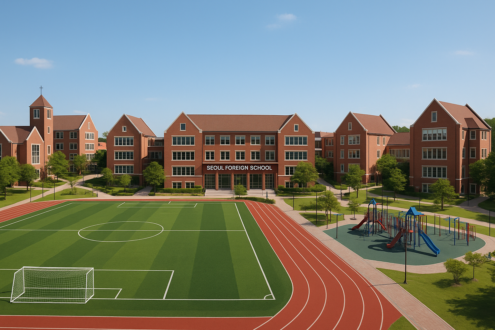

Seoul Foreign School
A institute nurturing brilliant minds and sophisticated intelligence.
With around 1550 students enrolled, we guarentee long lasting friendships, and everlasting enjoyment.
Find us at 39 Yeonhui-ro 22-gil, Seodaemun-gu, Seoul.

Seoul Foreign School hopes to inspire a lifelong love of learning, a strong sense of character, and a commitment to making a positive difference in the world.
By nurturing curiosity, creativity, and critical thinking, the school encourages students to explore their passions and strive for academic excellence.
Rooted in Christian values and a diverse international environment, SFS aims to develop compassionate, globally minded individuals who lead with integrity, respect others, and embrace responsibility.
Ultimately, the school aspires to empower each child to grow into a confident, ethical, and purposeful global citizen.
In addition to academic excellence, Seoul Foreign School places great emphasis on holistic development—fostering emotional intelligence,
resilience, and personal growth. Through a wide range of co-curricular programs, from athletics to the arts,
students are encouraged to discover their talents, collaborate with others, and build meaningful connections. The school’s supportive community and dedicated faculty work together to ensure that every child feels seen,
valued, and empowered to take risks in a safe,
nurturing environment. Seoul Foreign School also strives to cultivate a deep appreciation for cultural diversity and global citizenship.
With students and teachers from around the world, the school creates a vibrant, inclusive space where different perspectives are welcomed and celebrated.
By engaging with real-world issues and community service, students learn the importance of empathy, stewardship, and contributing to the greater good.
SFS aims to inspire your child not only to succeed academically,
but also to lead with heart and purpose in an ever-changing world.

The International Baccalaureate (IB) curriculum is a globally recognized educational framework designed to develop students into well-rounded, inquisitive, and compassionate individuals.
It emphasizes critical thinking, intercultural understanding, and a strong sense of global citizenship. The curriculum is structured across four programs:
the Primary Years Programme (PYP), Middle Years Programme (MYP), Diploma Programme (DP), and Career-related Programme (CP), each tailored to specific age groups from ages 3 to 19.
A hallmark of IB education is its emphasis on inquiry-based learning, encouraging students to ask questions, explore real-world issues, and make connections across subjects.
In the IB Diploma Programme (DP), typically pursued in the final two years of high school, students take courses across six subject groups, including languages, sciences, mathematics, and the arts.
In addition to these subjects, the DP includes three core components: the Extended Essay (EE), Theory of Knowledge (TOK), and Creativity, Activity, Service (CAS). These elements foster independent research skills, philosophical
reflection, and meaningful community engagement. Together, the IB curriculum promotes academic rigor while nurturing students' personal growth,
equipping them with the skills and mindset needed to succeed at university and beyond. One of the key strengths of the IB curriculum is its focus on developing students into lifelong learners who are not only knowledgeable but also open-minded, reflective,
and principled. IB learners are encouraged to explore different perspectives, engage in collaborative problem-solving, and communicate their ideas effectively.
The curriculum is intentionally international in outlook, preparing students to thrive in a rapidly changing, interconnected world. Whether through language acquisition, global issues in the classroom, or interdisciplinary projects,
IB students gain a deep appreciation for cultural diversity and social responsibility. This holistic approach ensures that learners grow both academically and personally, with a strong foundation for leadership and meaningful contribution to society.
Seoul Foreign School’s School‑Wide Extracurricular Program (SWEP) provides an extensive array of after-school and weekend opportunities throughout the year.
Students in all grade levels can choose from a diverse selection of activities in sports
(e.g., soccer, basketball, badminton, track & field, table tennis, wrestling), fine arts (ceramics, clay art, visual arts, music ensembles, choir, drama production),
and academic enrichment (robotics, chess, Model UN, math competitions, coding). These offerings change seasonally—fall, winter, and spring—to match students' evolving interests, and aim to boost confidence, social skills, and academic exploration
Added to this is the Saturday Sports Program (SSP), run by the PTA. It’s tailored especially for elementary and middle school students, though older students may join too. Taking advantage of the school’s top‑notch facilities,
SSP offers weekend sessions in soccer, basketball, baseball, funk fitness, fencing, and badminton—designed for skill-building, team experience, and healthy weekend engagement
Beyond structured sports and arts, SFS encourages academic and leadership‑focused programs that enrich the IB journey. Middle Years and Diploma students can develop deeper engagement through activities
like the MYP Personal Project and IB’s CAS (Creativity, Activity, Service) and Extended Essay. High schoolers can tap into clubs such as Model UN, Speech & Debate, Math and Science Olympiads,
Habitat for Humanity, National Honor Society, robotics, film club, and more—creating a personalized extension of their passions and study.